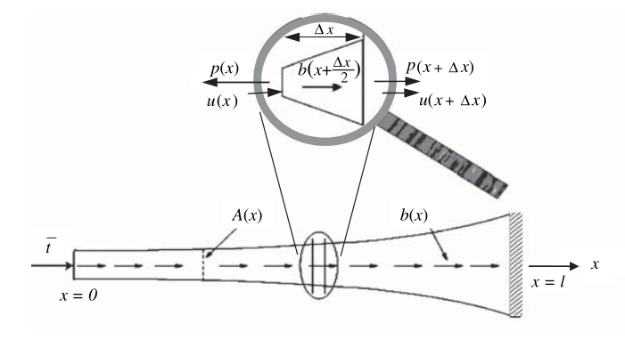
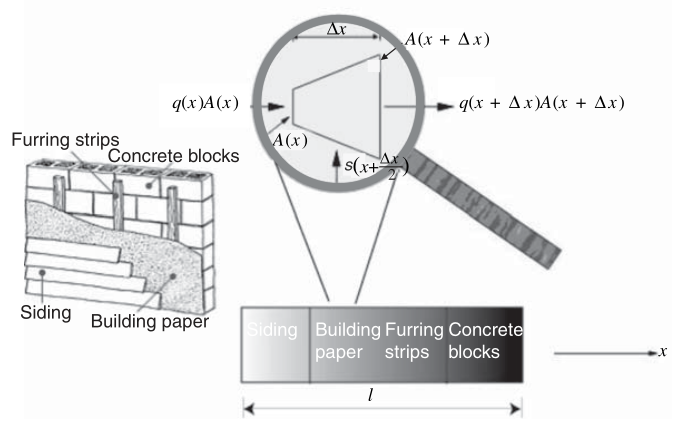
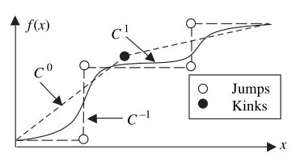

Chapter 3 Strong and weak forms of one-dimensional problems
Strong form: Governing equations along with the boundary conditions
Weak form: Integral form of the equations in the strong form ----> Weak continuity requirements
Finite difference method (FDM):
Strong form -----> A set of discrete equations
Finite element method (FEM):
Strong form -----> Weak form -----> (Combined with the approximation of functions) -----> Discrete equations
The strong form in one-dimensional problems
An axial loaded elastic bar

Internal force \(p(x)\); body force \(b(x)\) (force per unit length); traction \(\overline{t}\) (force per unit area)
\(-p(x)+b(x+\frac{\Delta x}{2})\Delta x+p(x+\Delta x)=0\)
\(\frac{p(x+\Delta x)-p(x)}{\Delta x}+b(x+\frac{\Delta x}{2})=0\)
take the limit \(\Delta x \rightarrow 0\)
\(\frac{d p(x)}{dx}+b(x)=0\)
Then, linear assumption (def of strain & stress-strain law) is adopted \(\Downarrow\)
strain is given by:
\(\varepsilon(x)=\lim\limits_{\Delta x \rightarrow 0}\frac{u(x+\Delta x)-u(x)}{\Delta x}=\frac{du}{dx}\)
Internal force is given by
\(p(x)=A(x)\sigma (x)=A(x)E\varepsilon (x)=AE\frac{du}{dx}\)
So, governing equation (2-order ODE) is given by
\(\frac{d}{dx}(AE\frac{du}{dx})+b=0\), (\(0<x<l\))
With the boundary conditions at the two ends, the strong form becomes
\(\frac{d}{dx}(AE\frac{du}{dx})+b=0\) on \(0<x<l\)
\(\sigma (x=0)=(E\frac{du}{dx})_{x=0}=-\overline{t}\)
\(u(x=l)=\overline{u}\)
Note that the sign convention for \(\sigma\) and \(\overline{t}\), former is tension + and compression -, latter is positive x-axis +,negative x-axis -
Steady-state heat conduction in one dimension
The form of heat transfer: conduction, convection, thermal radiation

Conservation of energy:
\(s(x+\frac{\Delta x}{2})\Delta x+q(x)A(x)-q(x+\Delta x)A(x+\Delta x)=0\)
\(\frac{q(x+\Delta x)A(x+\Delta x)-\Delta x+q(x)A(x)}{\Delta x}-s(x+\frac{\Delta x}{2})=0\)
Take the limit \(\Delta x \rightarrow 0\)
\(\frac{dqA}{dx}-s=0\)
The constitutive equation for heat flow is given by
\(q=-k\frac{dT}{dx}\)
Then, the governing equation is given by
\(\frac{d}{dx}(Ak\frac{dT}{dx})+s=0\)
With the boudany conditions at two ends, the strong form becomes
\(\frac{d}{dx}(Ak\frac{dT}{dx})+s=0\) on \(0<x<l\)
\(q=-k\frac{dT}{dx}=-\overline{q}\) on \(x=0\)
\(T=\overline{T}\) on \(x=l\)
The negative sign in \(q=-\overline{q}\) is beacuse the prescribed flux \(\overline{q}\) is positive when heat flows out of the bar
Diffusion in one dimension
P46 Similar to 1D heat conduction...
The weak form in one dimension
For the problem of axial loaded elastic bar, ...
use the weight function (test function) \(w(x)\) to multiply the gonverning equation and boudary conditions ...
and integrate over the domian they hold
\(\int_0^l w[\frac{d}{dx}(AE\frac{du}{dx})+b]dx=0\), \(\forall w\) with \(w(l)=0\)
\((wA(E\frac{du}{dx}+\overline{t}))_{x=0}=0\), \(\forall w\) with \(w(l)=0\)
The arbitariness of the weight function $w(x)$ is crucial
Use the integration by parts, the weak form is transformed into
\(\int_0^l w[\frac{d}{dx}(AE\frac{du}{dx})+b]dx=(wAE\frac{du}{dx})|_0^l-\int_0^l \frac{dw}{dx}AE\frac{du}{dx}dx+\int_0^lwbdx=0\)
For \(w(l)=0\) and \((wA(E\frac{du}{dx}+\overline{t}))_{x=0}=0\)
\((wA\sigma)_{x=l}-(wA\sigma)_{x=0}-\int_0^l \frac{dw}{dx}AE\frac{du}{dx}dx+\int_0^lbdx=(wA\overline{t})_{x=0}-\int_0^l \frac{dw}{dx}AE\frac{du}{dx}dx+\int_0^lwbdx=0\)
So the weak form of the above problem becomes:
\(--------------------------\)
Find \(u(x)\) among the smooth functions that satisfy \(u(l)=\overline{u}\) such that
\(\int_0^l \frac{dw}{dx}AE\frac{du}{dx}dx=(wA\overline{t})_{x=0}+\int_0^lwbdx\), \(\forall w\) with \(w(l)=0\)
\(--------------------------\)
Trial solutions/ candidate solutions: a set of admissible solutions \(u(x)\) that satisfy certain conditions
Boundary conditions
Essential boundary conditions: BCs that trial solutions \(u(x)\) must saitisfy (Dispalcement)
Natural boundary conditions: BCs that emnate naturally from the weak form and trial solution \(u(x)\) needed to satisfy (Traction)
Requirements for using weak form: Admissible
Admissible of trial solution: smooth and satisifies the essential boundary conditions
Admissible of weight function: smooth and vanishes the essential boundaries
Continuity
\(C^n\) fucntion: the derivatives of the function of order \(j\) exist (0\(\leq j \leq n\)) and are continuous functions in the entire domain

Jumps: Strong discontinuities; Kinks: Weak discontinuities
In general, the derivative of $C^n$ fucntion is $C^{n-1}$ fucntion
The equivalence between the weak and strong forms
Key to the proof: The arbitrariness of the weight function \(w(x)\)
The trial solution \(u(x)\) that satisfies the weak form satisfies the strong form
One-dimensional stress analysis with arbitary boundary conditions
\(\Gamma_u \cup \Gamma_t=\Gamma\)
Any boudanry is either an essential boundary or a natural boundary and their union is the enire boundary
\(\Gamma_u \cap \Gamma_t=0\)
Natural boundary conditions and essential boundary conditions cannot be applied at the same boundary points
P58 The two boundaries are said to be complementary
Strong form for 1D stress analysis
\(\frac{d}{dx}(AE\frac{du}{dx})+b=0\) on \(0<x<l\),
\(\sigma n=En\frac{du}{dx}=\overline{t}\) on \(\Gamma_t\),
\(u=\overline{u}\) on \(\Gamma_u\)
\(n\) -----> the normal vector pointing outwards
Weak form for 1D stress analysis
\(H^1\) is a space of functions with square integrable derivatives and \(H^1 \subset C^0\)
P60 $H^1$ contains an infinite number of functions and is called an infinite set
Define two function spaces \(U\) and \(U_0\) :
\(U=\{u(x)|u(x) \in H^1, u=\overline{u}\) on \(\Gamma_u\}\)
\(U_0=\{w(x)|w(x) \in H^1, w=0\) on \(\Gamma_u\}\)
Use the weight function \(w(x)\), the strong form becomes
\(\int_{\Omega}w(\frac{d}{dx}(AE\frac{du}{dx})+b)dx=0\), \(\forall w\) ,
\((wA(\overline{t}-\sigma n))|_{\Gamma_t}=0\), \(\forall w\)
For the boundary parts \(\Gamma\) can be divided into \(\Gamma_t\) and \(\Gamma_u\) and \(w\) vanishes on \(\Gamma_u\)
\(\int_{\Omega} w[\frac{d}{dx}(AE\frac{du}{dx})+b]dx=(wAE\frac{du}{dx}n)|_{\Gamma_u}+(wAE\frac{du}{dx}n)|_{\Gamma_t}-\int_{\Omega} \frac{dw}{dx}AE\frac{du}{dx}dx+\int_{\Omega}wbdx=0\)
So, \(\int_{\Omega} \frac{dw}{dx}AE\frac{du}{dx}dx=(wA\overline{t})_{\Gamma_t}+\int_{\Omega}wbdx\)
The weak form becomes
\(--------------------------\)
Find \(u(x) \in U\) such that
\(\int_{\Omega} \frac{dw}{dx}AE\frac{du}{dx}dx=(wA\overline{t})_{\Gamma_t}+\int_{\Omega}wbdx\), \(\forall w \in U_0\)
\(--------------------------\)
One-dimensional heat conduction with arbitary boundary conditions
Similar with 1D stress analysis...
Two-point boundary value problems wit generalized boundary conditions
TWo-point boundary value problem:
\(\frac{\partial}{\partial x}(A\kappa \frac{\partial \theta}{\partial x})+f=0\) on \(\Omega\)
Diffusion, heat conduction, elastic problems in this Chapter are all of the above form
Generalized boundary conditions:
\((\kappa n \frac{\partial \theta}{\partial x}-\overline{\Phi})+\beta(\theta-\overline{\theta})=0\) on \(\Gamma_{\Phi}\)
When \(\beta\) is a penalty paramerter (large number), the essential boundary conditions become a limiting case of the equation above
then \(\Gamma \equiv \Gamma_{\Phi}\)
Two approches to deal with the boundary condition: Penalty method and Partition method
Strong form for two-point boundary value problems with generalized boundary conditions
- General strong form for 1D problems-penalty method
\(\frac{\partial}{\partial x}(A\kappa \frac{\partial \theta}{\partial x})+f=0\) on \(\Omega\)
\((\kappa n \frac{\partial \theta}{\partial x}-\overline{\Phi})+\beta(\theta-\overline{\theta})=0\) on \(\Gamma\)
- General strong form for 1D problems-partition method
\(\frac{\partial}{\partial x}(A\kappa \frac{\partial \theta}{\partial x})+f=0\) on \(\Omega\)
\((\kappa n \frac{\partial \theta}{\partial x}-\overline{\Phi})+\beta(\theta-\overline{\theta})=0\) on \(\Gamma_{\Phi}\)
\(\theta=\overline{\theta}\) on \(\Gamma_{\theta}\)
Weak form for two-point boundary value problems with generalized boundary conditions
- General weak form for 1D problems-penalty method
Find \(\theta(x) \in H^1\) such that
\(\int_{\Omega}\frac{dw}{dx}A\kappa\frac{d\theta}{dx}dx-\int_{\Omega}wfdx-wA(\overline{\Phi}-\beta(\theta-\overline{\theta}))|_{\Gamma}=0\), \(\forall w \in H^1\)
- General weak form for 1D problems-partition method
Find \(\theta(x) \in U\) such that
\(\int_{\Omega}\frac{dw}{dx}A\kappa\frac{d\theta}{dx}dx-\int_{\Omega}wfdx-wA(\overline{\Phi}-\beta(\theta-\overline{\theta}))|_{\Gamma_{\overline{\Phi}}}=0\), \(\forall w \in U_0\)
Advection-diffusion (1D)
Conservation principle: the species (material ,energy or state) is conserved in each volume \(\Delta x\)
i.e. the amount of species entering minus the amount of leaving equals the amount produced
Notation:
Concentration of species: \(\theta(x)\)
Cross section area: \(A(x)\)
Velocity of the fluid: \(v(x)\)
Source: \(s(x)\)
control volume: \(\Delta x\)
Strong form of advection-diffusion equation
From the conervation principle
\((Av\theta)_x+(Aq)_x-(Av\theta)_{x+\Delta x}-(Aq)_{x+\Delta x}+s(x+\frac{\Delta x}{2})\Delta x=0\)
Take the limit \(\Delta x \rightarrow 0\)
\(\frac{d (Av\theta)}{d x}+\frac{d (Aq)}{d x}-s=0\)
For an incompressible flow, the volume of material entering the control volume equals the volume leaving.
\((Av)_x=(Av)_{x+\Delta x}\)
Take the limit \(\Delta x \rightarrow 0\)
\(\frac{d (Av)}{d x}=0\)
So the governing equation becomes
\(\frac{d (Av\theta)}{d x}+\frac{d (Aq)}{d x}-s=\theta \frac{d (Av)}{d x}+Av\frac{d \theta}{dx}+\frac{d (Aq)}{d x}-s=0\)
\(Av\frac{d \theta}{dx}+\frac{d (Aq)}{d x}-s=0\)
Assume the diffusion is linear and use the Fick's first law
\(q=-k\frac{d\theta}{dx}\)
Then the advection-diffusion equation is as follows
\(\underbrace{Av\frac{d \theta}{dx}}_{advection}-\underbrace{\frac{d}{dx}(Ak\frac{d\theta}{dx})}_{Diffusion}-\underbrace{s}_{Source}=0\)
With the boundary conditions
\(\theta=\overline{\theta}\) on \(\Gamma_{\theta}\)
\(qn=-k\frac{d\theta}{dx}n=\overline{q}\) on \(\Gamma_q\)
Weak form of advection-diffusion equation
Multipy the governing eqaution and intergrate over the domain
Intergrate the diffusion term by parts, we can get the weak form:
Find \(\theta(x)\in U\) such that
\(\int_{\Omega}wAv(\frac{d\theta}{dx})dx+\int_{\Omega}\frac{dw}{dx}Ak\frac{d\theta}{dx}dx-\int_{\Omega}wsdx+(wA\overline{q})|_{\Gamma_q}=0\) for \(\forall w \in U_0\)
Instead of using the flux boundary condition (natural) above, follow generalized boundary condition can be used
\((-k\frac{d\theta}{dx}+v\theta)n=\overline{q}_T\)
Then integrate the first term by parts in the above weak form, we can get
\(-\int_{\Omega}\frac{dw}{dx}Av\theta dx+\int_{\Omega}\frac{dw}{dx}Ak\frac{d\theta}{dx}dx-\int_{\Omega}wsdx+(wA\overline{q}_T)|_{\Gamma_q}=0\)
... ...
Minimum potential energy
Theorem of minimum potential energy
\(------------------------\)
The solution of the strong from is the minimizer of
\(W(u(x))=\underbrace{\frac{1}{2}\int_{\Omega}AE(\frac{du}{dx})^2dx}_{W_{int}}-\underbrace{(\int_{\Omega}ubdx+(uA\overline{t})|_{\Gamma_t})}_{W_{ext}}\)
\(------------------------\)
Potential energy of the system : \(W(u(x))\) -----> functional (function of function)
The physical meaning:
The solution is minimizer (a stationary point) of the potential energy \(W\) among all admissible displacement functions
Proof of equivalence:
A variation of the function \(u(x)\) : \(\delta u(x) \equiv \zeta w(x)\)
where \(w(x)\) is an arbitary function and \(0<\zeta\ll1\)
Variation in the functional : \(\delta W=W(u(x)+\zeta w(x))-W(u(x))\equiv W(u(x)+\delta u(x))-W(u(x))\)
For \((U(x)+\zeta w(x)) \in U\), \(w(x)\) must vanish on the essential boundary, \(w(x)\in U_0\)
Variation of in the internal and external work
\(\delta W_{int}=\frac{1}{2}\int_{\Omega}AE(\frac{du}{dx}+\zeta\frac{dw}{dx})^2dx-\frac{1}{2}\int_{\Omega}AE(\frac{du}{dx})^2dx=\zeta\int_{\Omega}AE(\frac{du}{dx})(\frac{dw}{dx})dx\)
\(\delta W_{ext}=\delta W_{ext}^{\Omega}+\delta W_{ext}^{\Gamma}=\int_{\Omega}(u+\zeta w)bdx-\int_{\Omega}(u)bdx+(u+\zeta w)A\overline{t}|_{\Gamma_t}-(u\overline{t})A|_{\Gamma_t}=\zeta(\int_{\Omega}wbdx+(wA\overline{t})|_{\Gamma_t})\)
At the minimum of \(W(u(x))\), there should be \(\delta W=\delta W_{int}-\delta W_{ext}=0\)
So we can get the follwoing statement
Find \(u\in U\) such that
\(\frac{\delta W}{\zeta}=\int_{\Omega}AE(\frac{du}{dx})(\frac{dw}{dx})dx-\int_{\Omega}wbdx-(wA\overline{t})|_{\Gamma_t}=0\) , \(w\in U_0\)
Alternatively, use the \(\delta u\) to replace the \(\zeta w\), i.e.
Find \(u\in U\) such that
\(\delta W=\int_{\Omega}AE(\frac{du}{dx})(\frac{d(\delta u)}{dx})dx-\int_{\Omega}\delta u bdx-(\delta u A\overline{t})|_{\Gamma_t}=0\) , \(w\in U_0\)
The minimizer of the potential energy functional <--------> The weak form <--------> The strong form
Principle of virtual work
Use the strain-displacement equation and the stress-strain law
\(\delta W=\underbrace{\int_{\Omega}A\sigma\delta \varepsilon dx}_{\delta W_{int}}-\underbrace{\int_{\Omega}b\delta udx-(\overline{t}A\delta u)|_{\Gamma_t}}_{\delta W_{ext}}=0\)
So the principle of virtual work can be stated as follows:
The admissible displacement field (\(u\in U\)) for which the variational in the internal work \(\delta W_{int}\) equals the variation in the external work \(\delta W_{ext}\) for \(\forall \delta u\in U_0\) satisfies equilibrium and boundary conditions.
\(W_{int}=\int_{\Omega}w_{int}Adx=\frac{1}{2}\int_{\Omega}AE\varepsilon^2dx\)
where \(w_{int}\) is the energy per volume called energy density
Some weak forms can be converted to variational principles
The potential energy theorem holds for any elastic system and the similar variational principle can be formulated for heat conduction
Variational principles can only be developed for systems that are self-adjoint
Integrability
Integrability for the weak form :
The integrals in the weak form can be evaluated, which requires the smoothness of the trial solution and weight function
A derivative of a function \(u(x)\) is called square integrable if \(W_{int}(\theta)\) is bounded (\(W_{int}(\theta)<\infty\))
\(W_{int}(\theta)=\frac{1}{2}\int_{\Omega}\kappa A(\frac{d\theta}{dx})^2dx\)
The required smoothness in FEM: The weight and trial functions are required to posses square integrable derivatives
In elasticity, \(W_{int}(\theta)\) corresponds to the strain energy
The value of $\sqrt{W_{int}(\theta)}$ is often called an energy norm
The notions of required smoothness also have a physical basis (Compatibility of the displacement field, no gaps or overlaps...)
$C^0$ continuity is enough for the weight and trial functions